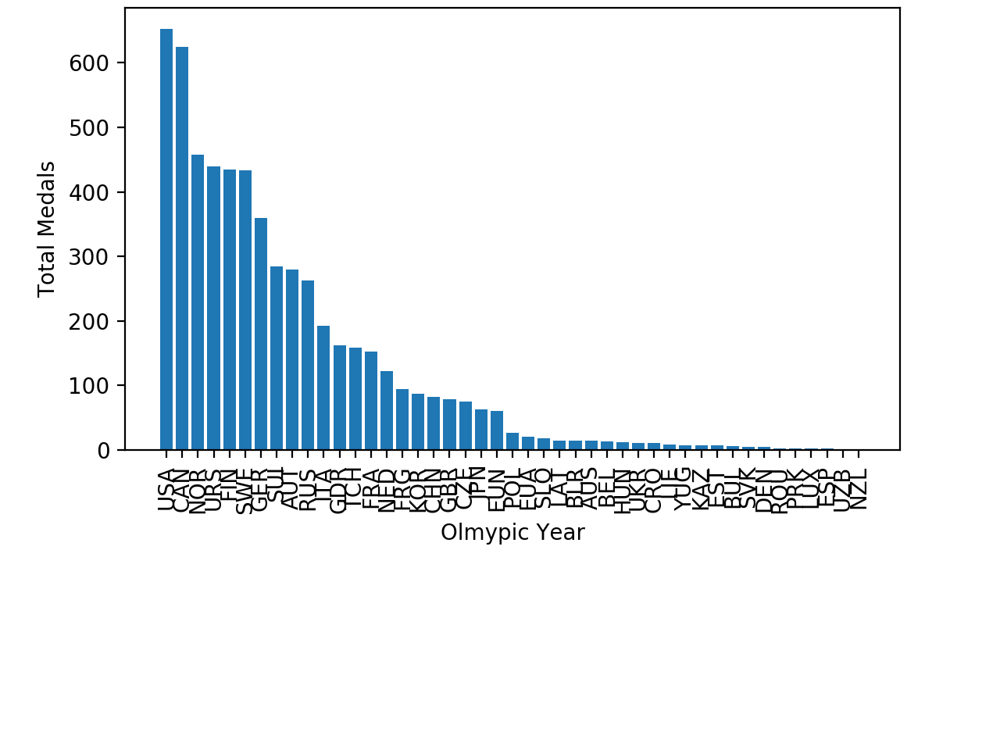
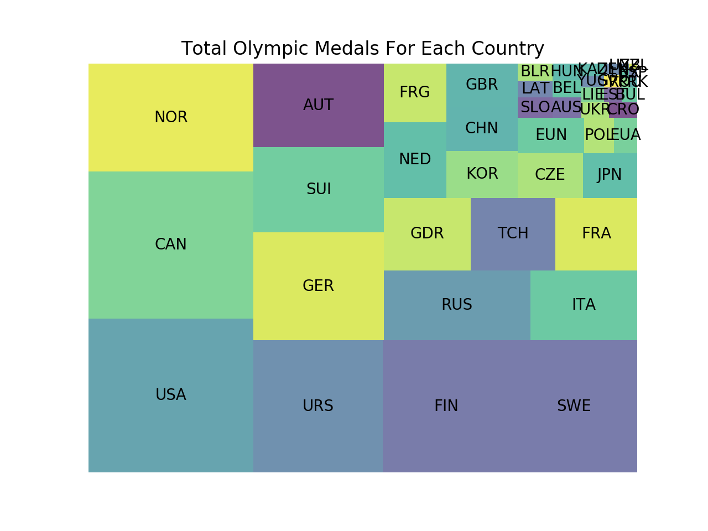
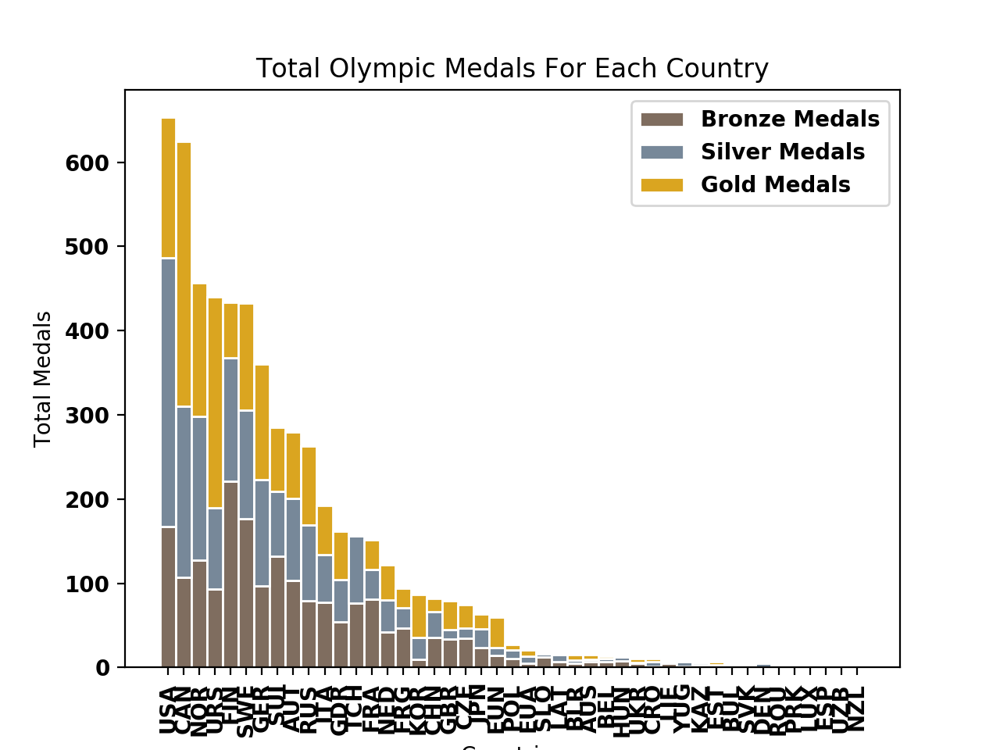
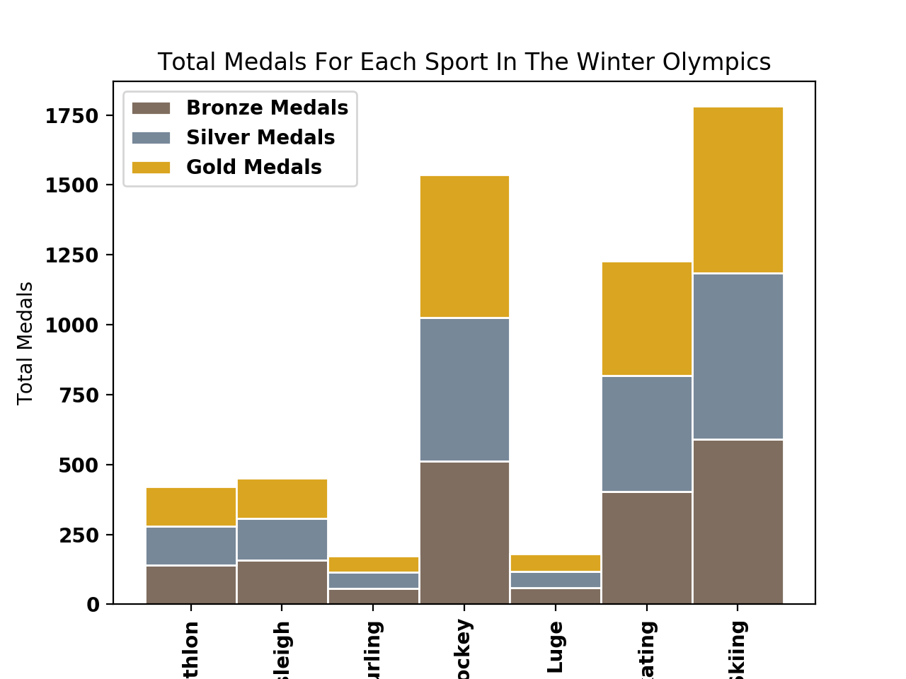
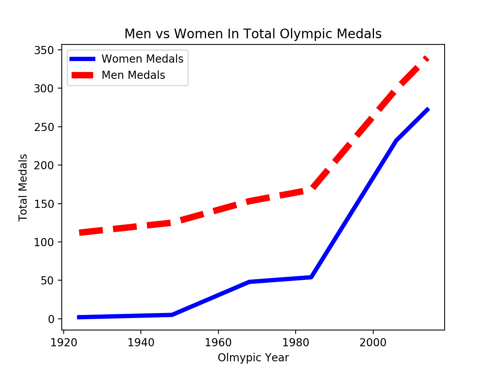
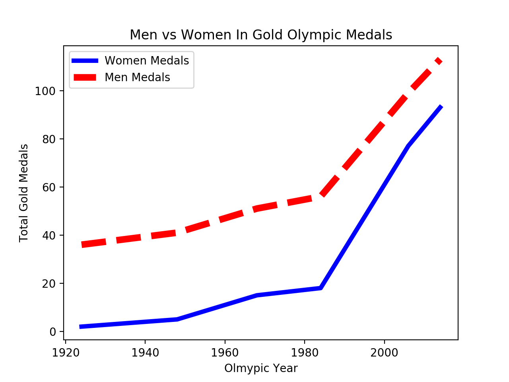

Winter Olympic Medals
Medals given in the winter olympics between 1924 and 2014
Over the years of Winter Olympics men have won more medals than women, but what countries have woman who dominate in gold medals? Check this out...
Resources
First Example
Overall total amount of medals in each Country that participated in the Winter Olympics.
Second Example
Along with the bar graph the treemap shows the countries with the overall most amount of medals to the lowest amount of medals.
Resources
Third Example
Total medals for all the medals along with just showing gold, silver and bronze total medals for each country.
Fourth Example
Totals medals for each sport in the Winter Olympics showing the overall total along with bronze, silver, and gold totals for each sport.
Resources
Fifth Example
Men vs woman in overall total amount of medals won over the years.
Sixth Example
Men vs women in the amount of gold medals they won.
In 1924, 6 medals were won by women in the Winter Olympics and by the end of 2014 they have increased exponentially to 272. While men started at 112 and increased at a much lower rate to 340 by 2014! Finally this line graph and a multi-line graph compares men to women and the gold medals vs total medals they have won over the years